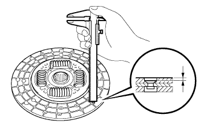
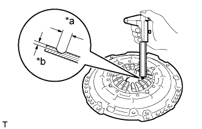
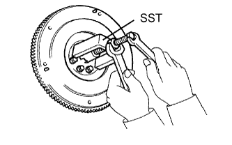

БЛОК СЦЕПЛЕНИЯ (для моделей с 1KD-FTV) > ПРОВЕРКА |
| 1. ПРОВЕРЬТЕ ВЕДОМЫЙ ДИСК СЦЕПЛЕНИЯ В СБОРЕ |
|  |
Измерьте глубину головки заклепки штангенциркулем.
 |
С помощью индикатора часового типа проверьте биение диска.
| 2. ПРОВЕРЬТЕ КОЖУХ СЦЕПЛЕНИЯ В СБОРЕ |
|  |
Измерьте штангенциркулем глубину и ширину изношенных участков диафрагменной пружины.
| Параметр / Устройство | Заданные условия |
| Ширина | 6,0 мм (0,236 дюйма) |
| Глубина | 0,35 мм (0,0137 дюйма) |
| *a | Ширина |
| *b | Глубина |
| 3. ПРОВЕРЬТЕ МАХОВИК В СБОРЕ |
 |
С помощью индикатора часового типа измерьте биение маховика.
| 4. ПРОВЕРЬТЕ ПОДШИПНИК ВЫКЛЮЧЕНИЯ СЦЕПЛЕНИЯ В СБОРЕ |
 |
Приложив усилие в осевом направлении, поверните подшипник рукой и убедитесь, что он вращается плавно.
Если подшипник заедает, или вращение существенно затруднено, замените подшипник выключения сцепления.
| 5. ПРОВЕРЬТЕ ПЕРЕДНИЙ ПОДШИПНИК ПЕРВИЧНОГО ВАЛА |
 |
Поверните подшипник рукой и убедитесь, что он вращается плавно.
Если подшипник заедает, или вращение существенно затруднено, замените передний подшипник первичного вала.
| 6. ЗАМЕНИТЕ ПЕРЕДНИЙ ПОДШИПНИК ПЕРВИЧНОГО ВАЛА |
Выверните 2 любых диаметрально противоположных болта.
|  |
С помощью SST снимите подшипник первичного вала.
 |
С помощью SST и молотка запрессуйте новый подшипник.
Нанесите герметик на последние 2-3 витка резьбы каждого болта.
Заверните 2 болта.